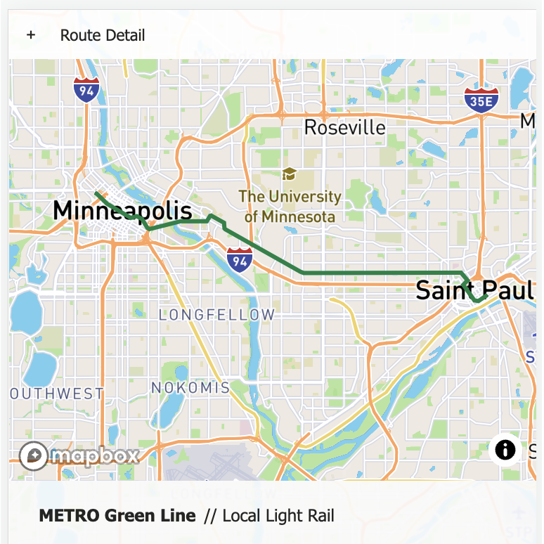
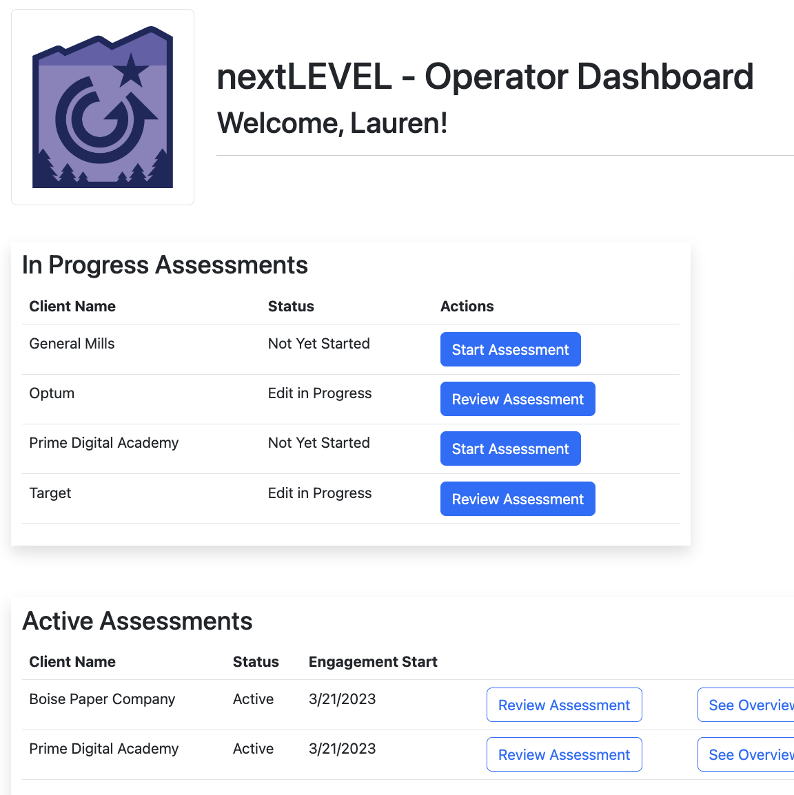

A little more about me:
I possess what can only be described as an insatiable curiosity. There are few things I love more in the world than finding a Wikipedia hole to fall into, and candidly, I’ve lost more time learning about citrus fruit taxonomy than I care to admit. I don’t even like oranges, but I love to find a new topic and juice the hell out of it.I carry my curiosity with me through all aspects of life, but nowhere more than coding. I started playing with HTML and CSS in elementary school — mostly little things, like online game profiles sold for in-game currency — and I’ve been coming back to it ever since. I love that there’s always something new to pull apart, dig a little deeper on, and experiment with. The challenge of it all, and making sense of ‘the new’, is what energizes me most.
Please feel free to reach out if you’d like to connect! The icons beneath my picture will send you to my LinkedIn, my Github, my resume, and your email, respectively.
(I can also provide fruit facts on request — just let me know. 🍊✨)
What I've been up to lately:

Route Around
A web app showcasing modern & historic points of interest located along MN Metro Transit's Green Line lightrail. The purpose of this app was to increase transit ridership, promote tourism in the Twin Cities area, and satisfy my own curiosity about what I'm looking at on my commute.LIVE PREVIEW // DOCUMENTATION

Growth Operators
A web app designed & built to assist local consultancy Growth Operators in centralizing their workflow, improving user experience and streamlining documentation for consultants. The resulting product enables them to seamlessly create & access client information, review and edit assessment details, and access dynamically created presentations and reports.LIVE PREVIEW // DOCUMENTATION